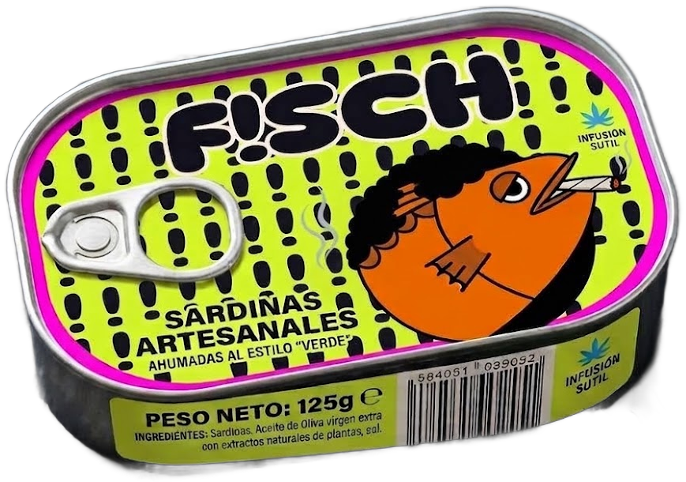
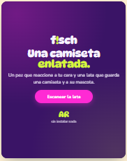
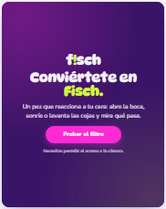

La lata
El empaque. Es lo primero que apuntas con la cámara.
Un pez que reacciona a tu cara y una lata que guarda una camiseta y a su mascota.
El producto
Una camiseta enlatada. La lata es el empaque y también la llave de la experiencia.
Apuntas la cámara a la lata y la experiencia se activa en tu teléfono, sin descargar nada.
Para ver la camiseta antes de abrirla y conocer a la mascota de f!sch.
Lo que escaneas
Apunta la cámara a la etiqueta para activar el trackeo y ver la camiseta y la mascota.

Packaging
El empaque. Es lo primero que apuntas con la cámara.
Lo que guarda la lata, visible en realidad aumentada antes de abrirla.
El personaje de f!sch, que completa la experiencia.
Trackeo de imágenes
Toca el botón o escanea el código de la lata.
Centra la lata en la pantalla y espera a que aparezca el contenido.
Mira la mascota, la camiseta y la lata desde todos los ángulos.

Filtro facial
El filtro sigue en pruebas. Aquí puedes verlo funcionando.

Todo lo que necesitas para conocer a f!sch.